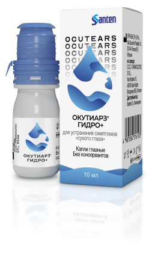

(Ocutears® Hydro+)
Окутиарз® Гидро+
Поперечно-связанная гиалуроновая кислота для терапии синдрома «сухого глаза»
Найти Окутиарз® Гидро+

Оптимальная концентрация ГК 0,2% не вызывает ощущения
склеивания
Способствует более интенсивной регенерации глазной
поверхности
Не содержит
консервантов
консервантов
Ухаживайте за глазами и наслаждайтесь жизнью!
Что делать при синдроме «сухого глаза», чтобы вернуться к комфортной
жизни